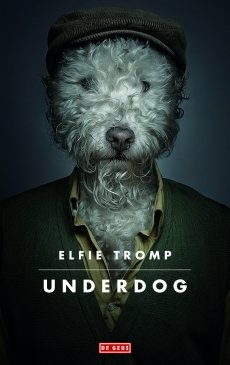

Underdog
Informatie over het boek
- title boekverslag: underdog
- auteur: Elfie Tromp
- jaar eerste druk: 2015
- jaar gelezen druk: 2015
- aantal pagina's: 224
- niveau lezen voor de lijst: 3
Samenvatting
In Underdog runnen moeder Vera en dochter Adelien een kennel met vooral Afghaanse windhonden in Klein-Zundert. (Noord-Brabant) Rein, de broer van Adelien, knapt er regelmatig het vuile werk van de honden op, maar dat komt, omdat hij zich in levensonderhoud moet voorzien en verder geen baan kan krijgen. Het liefst zit hij echter dag en nacht voor zijn beeldscherm en speelt hij met veel energie het computerspel World of Warcraft, waarin hij voor zijn team een gewaardeerd druïde is. Hij heeft daarbij vooral contact met het meisje Karin, een ernstig zieke mede gamer, die vlak voor haar dood nog een feestje wil geven en hem daarbij van harte uitnodigt. Maar het vooruitzicht sociale contacten te moeten onderhouden schrikt Rein af. Voor vader Diet is alleen een financiële rol weggelegd, al viert hij op afstand mee: er ligt altijd een fles champagne in de koelkast om op behaalde successen te kunnen klinken. We komen door de onzichtbare verteller te weten dat Adelien een absolute kinderwens heeft, maar haar man Freek is daarvoor niet zo gevoelig. Ze doet daarom stiekem extra onderzoeken en past middelen toe waarvan Freek niets weet.
Begin van de reis
Vader Diet is indirect oorzaak van de ellende, als hij niet langer geld in de hondenonderneming kan pompen. Dochter Adelien bedenkt een list om het aanzien (en de marktwaarde) van het hondenfokbedrijf Stardust BV te vergroten. Zij wil hun topteefje Gilly laten dekken door de legendarische Legend, een topreu uit een Australische kennel. Met de eigenaar daarvan heeft de lezer al kennis kunnen maken. Deze Mexicaan Bonbilla komt niet erg betrouwbaar over.
De voorbereidingen voor de reis zijn al getroffen en de tickets geboekt als moeder Vera ongelukkig op een door haar zelf georganiseerd feestje voor hondenfokkers ten val komt, een heup breekt, daarna in het ziekenhuis een bacteriële infectie oploopt en van de reis moet afzien. De enige die volgens Adelien in aanmerking komt om haar naar Down Under te vergezellen is broer Rein. Die staat niet te popelen om mee te gaan. Hij wil liever gamen. Bovendien heeft hij beloofd om in de werkelijke wereld naar het feestje van de zieke Karin te gaan. Zijn zus laat hem echter geen keus. Hij moet mee. Freek brengt hen beiden naar Schiphol. Vlak voordat ze vertrekt, heeft Adelien nog een nieuwe behandeling voor haar kinderwens ondergaan, maar Freek weet dat niet. Ze wordt tot haar teleurstelling weer ongesteld. De "zygote" van de titel heeft dus juist niet plaatsgevonden.
Australië
Adelien en Rein komen in Australië aan. Natuurlijk wordt de vreemd ogende jongen er al bij de douane uitgepikt. Toch mag hij het land binnen en ze gaan op weg naar enkele kleine hondenshows om ervaring op te doen. Adelien wint met de mannelijke reu een topprijs en ook topteef Gilly valt in de prijzen.
Intussen heeft Adelien via Skype contact met Karin achter de rug van Rein om. Ze wil dat ook hij contact met haar zoekt: het is namelijk hèt middel om eens een echt meisje te treffen. Maar Rein gaat niet op haar aanwijzingen in. Als hij het uiteindelijk toch doet, is het te laat. De broer van Karin meldt dat ze al in coma is gebracht en dat ze spoedig zal overlijden.
Slecht huwelijk
Freek is door een brief van het ziekenhuis erachter gekomen dat Adelien weer een reeks nieuwe experimenten is gestart en hij is daar erg boos over. Hij wil op dat moment geen contact meer met haar en het huwelijk dat eerst zo stevig leek, staat op wankelen. Nu is ook de comfortzone van Adelien (die sterk en vastberaden leek) aangetast. Ze ontmoet onderweg naar één van de hondenshows de survivaltrainer Adam, die haar een keer helpt als Rein in zijn boosheid is weggelopen en zij een hondenshow moet lopen. Ze laat daarbij merken dat ze Adam wel leuk vindt. Een nieuw gevaar voor haar huwelijk? Het kan zo natuurlijk niet uitblijven dat Adelien en Adam een keer bij elkaar in bed belanden. Immers, Adelien zoekt troost bij een kerel nu haar man niet thuis geeft. Rein kan niet uitstaan dat ze meer aandacht voor Adam dan voor hem heeft. Rein heeft zelf nooit echte seks met een vrouw gehad: er is ooit een schlemielige op seks lijkende ervaring op een toilet geweest. Wanneer Adam, de natuurmens, Adelien en Rein de les leest over hun onnatuurlijke gedrag, heeft Adelien er genoeg van en laat hem achter in de woestijn. Hij moet verder maar zien. Ze gaan op weg naar de meesterfokker Bonilla.
Spannend einde
Nu Adam weg is, zijn Adelien en Rein weer op elkaar aangewezen. Ze praten erover na. Adelien ziet in dat haar leven eigenlijk een mislukking is en Rein wil het liefst naar huis. Maar ze hebben een afspraak met Bonilla en voor het voortbestaan van hun bedrijf is de dekking van de reu Gilly een must. De ontmoeting valt erg tegen en Bonilla heeft veel weg van een crimineel. Hij zet met zijn voorstel ook Adelien onder druk. Ze kan het topzaad voor Gilly krijgen, maar ze zou haar eigen reu Marquis moeten achterlaten. Dat zou een slechte deal zijn, maar ze gaat noodgedwongen toch akkoord. Die avond hoort ze van een medewerker van Bonilla dat de man erg slecht is voor zijn honden die het "niet redden." Die martelt hij tot aan de dood. Adelien kan een foto daarvan nemen. Dan verlaat Rein zijn underdogpositie. Hij besluit de teugels in handen te nemen en ze vluchten met drie honden weg: Gilly, Marquis en de befaamde Legend. Natuurlijk worden ze achtervolgd door mannen van Bonilla. De dekpoging mislukt, maar Rein "tapt" zaad af bij Legend en doet dat in een plantenspuit. Zo kunnen ze later Gilly bevruchten wat nodig is voor het voortbestaan van hun bedrijf. Ze laten de hond Legend daarna los, en die gebruikt zijn vrijheid om het bos in te vluchten. Zo kunnen Rein en Adelien het vliegveld bereiken. Het is een op en top "open einde", want je hebt geen idee hoe het de personages later zal vergaan. Zal het huwelijk tussen Freek en Adelien nog hersteld worden, zal ze ooit zwanger worden, zal Rein ooit een vriendin krijgen, zal de Brabantse hondenfokkerij zich staande kunnen houden?
- Wat vond je zo leuk aan het spel World of Warcraft, Rein? Ik vond het zo leuk omdat ik dan geen sociale verplichtingen krijg en ik kan dan gewoon mijn eigen gang gaan.
- Adelien hoezo was je vreemd gegaan met Adam? Omdat ik toen in Australië was en ik had ruzie met mijn man gehad.
- Adelien waarom wilde je dat Rein contact ging opnemen met Karin? Omdat ik het zielig vond dat Rein geen vrienden had in het echt maar wel online dus ik dacht als die contact opneemt met Karin dan gaat hij misschien wat minder gamen.
- Adelien waar had je ruzie over met je man Freek toen je in Australië zat? We hadden ruzie omdat ik een kind wilde en hij niet en ik dat stiekem achter zijn rug om probeerde. Hij was er toen achter gekomen en was daar heel boos om en wilde toen even geen contact meer.
- Rein wanneer dacht jij van ik ga nu de teugels in eigen handen nemen? Toen ik hoorde dat de slechte honden werden mishandeld heb ik drie honden meegenomen en ben ik gevlucht.
- Adelien waarom kon je moeder niet gewoon mee naar Australië? Mijn moeder had haar heup gebroken en een infectie opgelopen dus was toen noodgedwongen niet meegegaan en moest Rein mee.
- Rein hoezo was je verliefd op Karin? Omdat ik geen contact hoefde op te zoeken en toch gezellig met haar kon gamen. Ook omdat ik na het gamen heel veel met haar kon praten.
- Adelien waarom vond je dat je leven een mislukking was? Omdat ik met mijn man ruzie had en het fokbedrijf ging slecht.

schrijver
De schrijver van het boek heet Elfie Tromp. Elfie Tromp is een Nederlandse schrijver. Ze heeft gestudeert aan de Hogeschool voor de Kunsten in Utrecht. Ze heeft verschillende romans geschreven zoals Goeroe en dit boek Underdog. Als je meer over deze schrijver wilt weten bekijk dan: